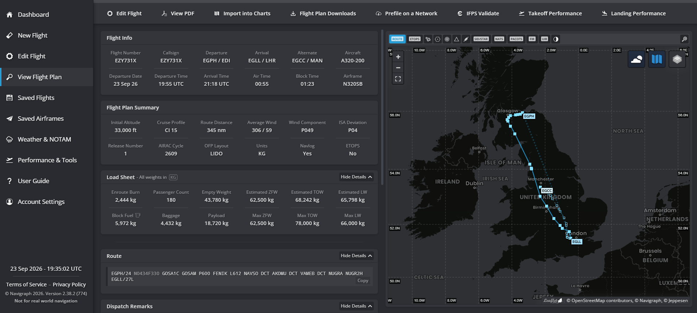

BEFORE YOUR FIRST FLIGHT
How to join VATSIM.
This will show you how to go from logging in to connecting to your first flight.
LET’S BEGIN
Create A Flight Plan
Once you have made a VATSIM account (Join) and passed the test, you can now do your first flight. Before going into the simulator we need to create a flight plan. We recommend making flight plans on SimBrief. it's free to use and easy to make flight plans.
To create a flight plan go to (SimBrief). Once you have made an account go to DISPATCH > DISPATCH SYSTEM > NEW FLIGHT then start by entering you airline ICAO code (eg. EZY for Easyjet) you can find this by searching your airline and then followed by ICAO. Once you've entered your airline ICAO we can now move on onto your flight number you can put whatever you want (eg. 741T). Now that you have entered your flight number you can now enter your departure and arrival enter their ICAO codes for each. Now, aircraft type which is located under "Aircraft Info" (eg. im flying the Airbus A320 so i will select "A320"). Now click generate in the top left. You've now made your flight plan! We now just need to file the flight plan to Vatsim. To do this click "Prefile on a Network" in the top bar and then choose Vatsim this should take you to the Vatsim flight plan page. Scroll down and click file flight plan. WELL DONE!

NEXT UP
Connect To VATSIM
Prepare your pilot client with the same callsign and aircraft type as your flight plan.
- Open vPilot. (Download)
- Setup Your Audio And Push To Talk In Settings
- Click Connect
- Add Your Callsign. (eg. EZY731X)
- Add your aircraft type (e.g. A320 for the Airbus A320).

GETTING READY
Ready To Go?
- Launch MSFS
- Load Into The Correct Plane And Stand
- Click Connect On vPilot
- Enter Your Details Into The Input Page
- Start Flying :)